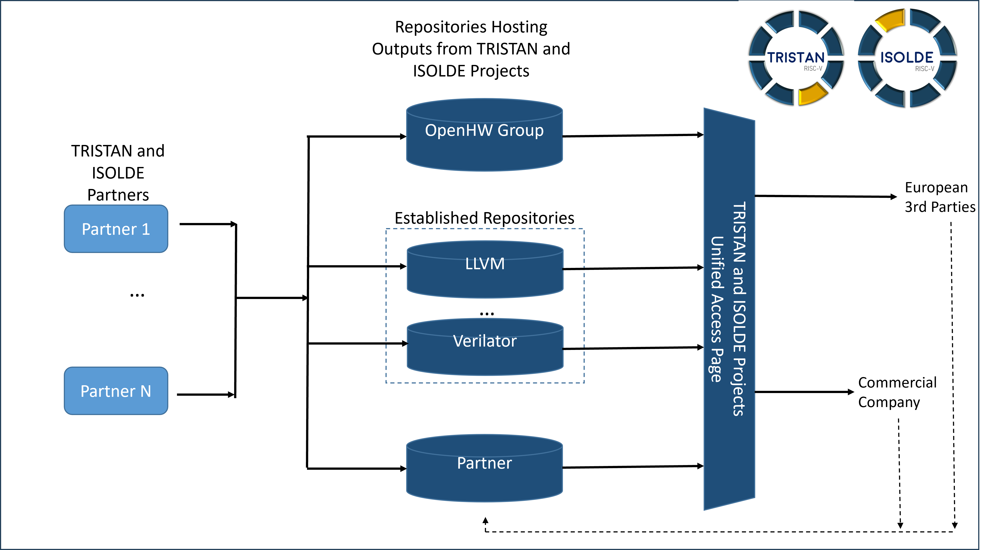

It provides references and descriptions of all the TRISTAN and ISOLDE IPs (hardware and software).
It serves as a Virtual Repository page, gathering all the information about the TRISTAN and ISOLDE repositories, their status,
and the TRISTAN and ISOLDE partners involved in them.
The TRISTAN and ISOLDE Unified Access Page acts like a static page, to provide a single access point to all the repositories TRISTAN and ISOLDE
contribute to. The updates and contributions will be upstreamed in the repository themselves.
Some of the repositories are hosted on the OpenHW Foundation GitHub forge, some are located on other public pages, and some are closed-source. The diagram below shows how the TRISTAN and ISOLDE repositories are organized.
The TRISTAN and ISOLDE Unified Access Page is the deliverable of the TRISTAN Task 2 of the Work Package 7 (7.2) and ISOLDE Work Package WP6.